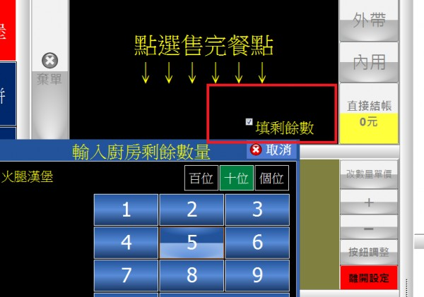
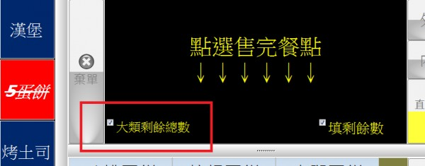

"暫停供應"餐點數量的倒數計算
可以避免點餐人員不清楚剩餘數量而一直花時間與後端人員確認，或者不知道剛好前筆售完了仍幫後面的客戶鍵單點選，事後才又向客戶道歉。謝謝!!
3 個回答
您好
站長這幾天會加入該功能
站長這幾天會加入該功能
已加入 填剩餘數 功能 請至首頁下載更新

V2.80 加入 大類剩餘總數

請參考
已加入 填剩餘數 功能 請至首頁下載更新

V2.80 加入 大類剩餘總數

請參考